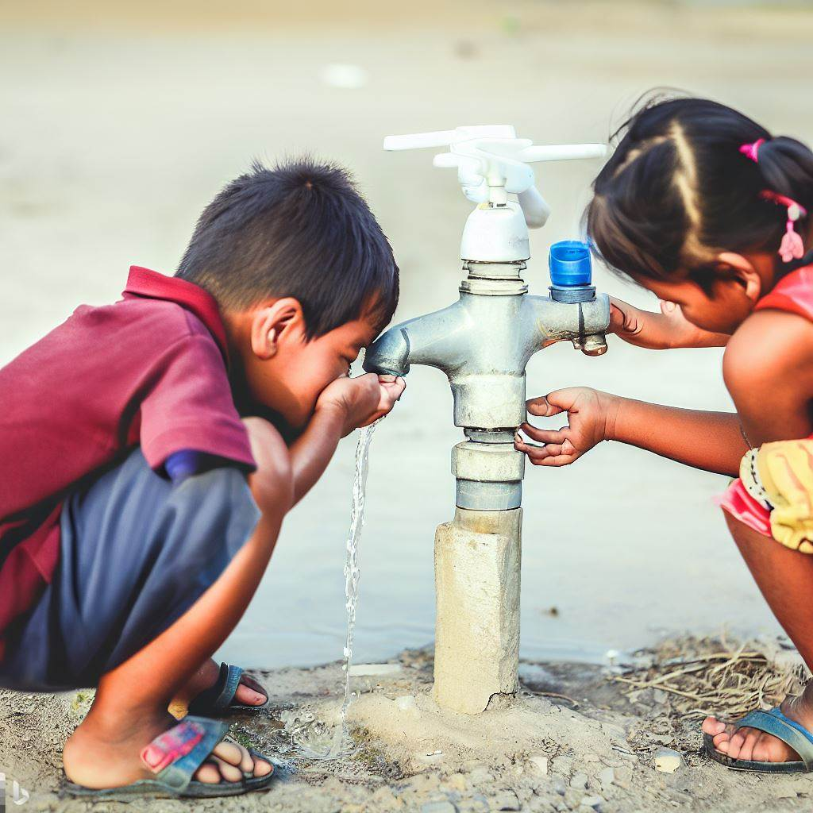

La higiene de manos es una práctica vital para prevenir infecciones en entornos de atención médica. En Argentina, se ha observado una disminución del 30% en la tasa de infecciones asociadas a la atención de la salud en el último año gracias a la mejora en la higiene de manos, lo que ha tenido un impacto positivo en la calidad de la atención médica y ha contribuido a salvar vidas